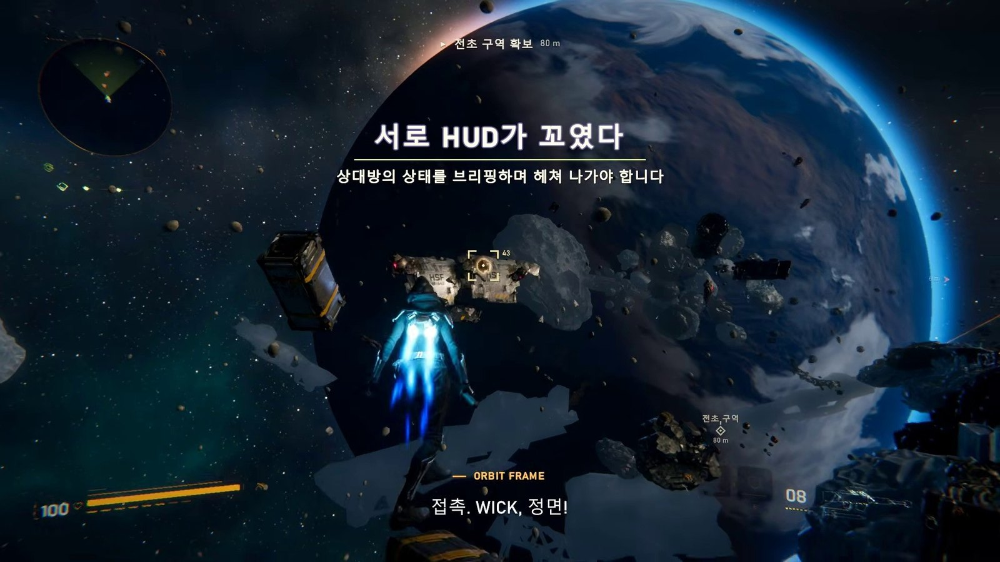

On Your Mark
AI 네이티브로 만든 2인 협동 SF 액션 게임
서로의 화면 정보(HUD)가 뒤바뀌어 말로 알려 줘야 하는 2인 협동 게임을 Unity AI Game Jam에서 4인 팀이 24시간 동안 만들었습니다. 기획부터 모델, 음성, 코드, 빌드까지 AI를 썼고 저는 렌더링과 게임 속 AI, 통합을 맡았습니다.

AI 네이티브로 만든 2인 협동 SF 액션 게임
서로의 화면 정보(HUD)가 뒤바뀌어 말로 알려 줘야 하는 2인 협동 게임을 Unity AI Game Jam에서 4인 팀이 24시간 동안 만들었습니다. 기획부터 모델, 음성, 코드, 빌드까지 AI를 썼고 저는 렌더링과 게임 속 AI, 통합을 맡았습니다.
